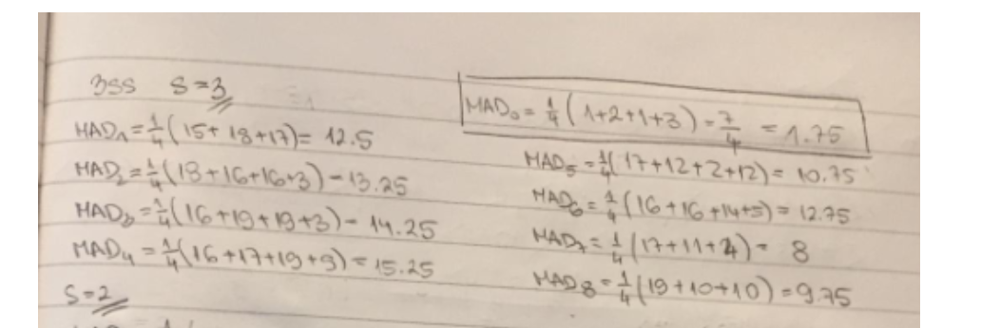
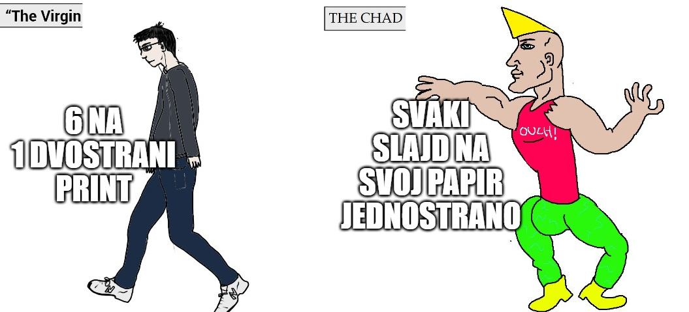

sta predstavlja d u ort i log algoritmima (jel mozda broj prozora koji stane do naseg referentnog ili broj brojeva do prvog u nasem referentnom prozoru) i kako je korak u 3ss 23=8 i onda u primjeru postavi tocke za 4 od srednje prema gore dolje lijevo desno (ono na kraju docx)
edit: netko je upravo prebacio te algoritmice na pocetak/sredinu docx-a
Zar nebi ovdje predznaci trebali biti obrnuti? Ako gledamo po ovoj formuli Ulazi li ovo u MI btw?
moukie Formula iz zadatka ima apsolutno u sebi.
edit: ne cek haha
moukie nope, tipa gledaš P’(2,0)=(P(1,0)-0)/2 => P’(2,0)=4
a za P’(0,2)=(0-P(0,1))/2 => P’(0,2)=-4
edit: greškom zamijenila predznake hah
moukie Dobijes (8-0)/2 i (7-0)/2 za skroz desni clan.
moukie ovo je definitivno zi 1.zad 2015-2016 na githubu… jedino ako u zi ne ulazi mi haha
adrian7000 Kako je onda prvi stupac iste matrice negativan? To je P s kapicom, prije apsolutne vrijednosti (koja se racuna na kraju) se racuna
dammitimmad jel onda i 22. zi?
adrian7000 a to je isti zadatak kolko vidim na prvu, ali stvarno vise nisam sigurna je li to mi ili zi. u mi dijelu preza nema nista o vjerojatnostima (ali ni to nisam sigurna jer ih nisam citala detaljno samo sam preletila da vidim pojavljuje li se igdje ta formula)
Maglica
120 je bilo i prosle godine.
ima netko slucajno prezentacije sa izbacenim nebitnim slajdovima? 4slajda/strani ispadne preko 130 strana, glupo mi toliko papira bacat haha
InCogNiTo124 Stavi 6 slajdova po strani, to ti je 12 po papiru, a to ti je oko 45 stranica

Nakon racunanja prvog koraka ovdje i smanjivanja na s=2 jel ostajemo u istom bloku u kojem smo bili jer je za njega najmanji MAD i ponovo racunamo oko njega ili se pomicemo u blok za koji smo izracunali MAD7=8 jer je on najmanji od ostalih?
adrian7000 ostajemo u istom, cak cijelo vrijeme ostajemo u istom pa je vektor pomaka na kraju (0, 0)
M̵̧̩͑̀͝î̶͍̉ć̴̝̾́̀o̶̺̟̣͂̽ al slabije se vidi za skimmanje
InCogNiTo124 jebiga napravio bih ja taj filter ali predmet nisam ni pogledao i učit ću ga sutra nakon RZNU-a (koji je u 8) lmao

Pretpostavljam da treba samo prvi dio? Evo moja skraćena verzija https://filebin.net/7bsw7w89kxyf3ik4
moze li me netko uputiti gdje se nalaze tocna rjesenja za 17 i 22 zadatak
kivu Za 17. je točno i ono na docsu, ali kolega @knjklj je to jednostavno objasnio u svom postupku ovdje.
Što je na kraju taj d? Koliko vidim, u nekim zadacima nije ni zadan, nego se samo koristi neka vrijednost, npr d = 8